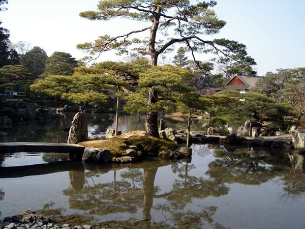

L'art japonais est caractérisé par des oppositions esthétiques. Par exemple, dans les céramiques des périodes préhistoriques, l'exubérance était suivie par un style discipliné et raffiné.
Un autre cas de figure est fourni par deux structures du xvie siècle diamétralement opposées : le palais de Katsura (桂離宮, Katsura rikyū) est un exercice de simplicité mettant l'accent sur les matériaux naturels et bruts, et montre une affinité pour la beauté non recherchée ; le mausolée du Tōshō-gū (東照宮) à Nikkō (日光) est une structure symétrique rigide recouverte sur chacune de ses surfaces visibles de gravures en relief colorées avec éclat.
Avec ces deux exemples apparaissent deux autres caractères opposés : les effets de symétrie, l'art du détail maîtrisé, associés à l'expression du pouvoir et au bouddhisme d'origine continentale, selon les codes d'origine chinoise ; d'autre part, les effets d'asymétrie et d'inachevé, les matières "pauvres" et naturelles associés à la culture proprement japonaise, depuis l'époque de Heian mais bien visibles à Katsura, comme dans tous les arts proprement japonais, que ce soit la peinture yamato-e et celle de l'école Rinpa, de nombreux objets associés à l'art du thé ainsi que la composition des kimonos.